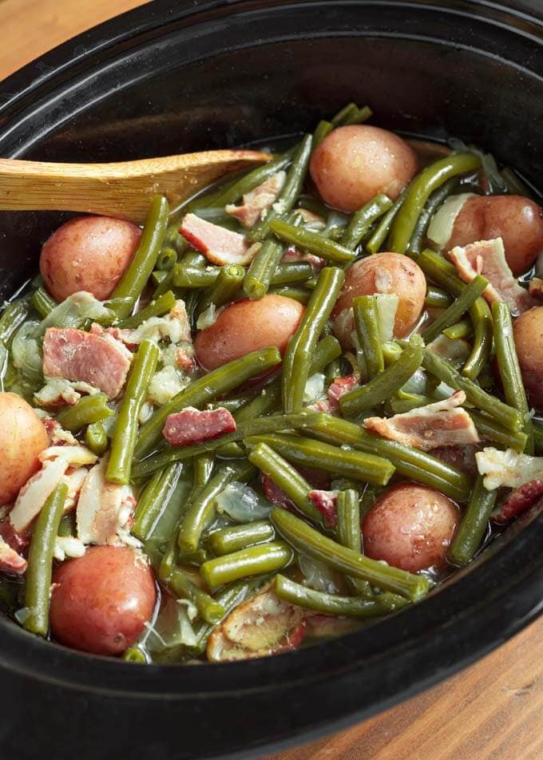

rap">
Green Bean, Potato, and Bacon Soup
Ingriedients
- 1/2 lb of green beans
- 1lb of bacon
- 3 or 4 full size potatos
- chicken broth
- water/li>
- salt, pepper, and garlic/li>
- 1/2 yellow onion
Steps
- Cook the bacon until crispy and save the grease
- Add full box of chicken broth to crockpot and season with garlic,salt and pepper
- Add cut up potatos, onion, and green beansli>
- Add in Bacon and Bacon Grease
- Add water to the crockpot until it almost submerges all ingridients
- Cook on low setting for six to eight hours or high for 4 hours in slow cooker
- Fold the buritto over the contents of it into the following shape:
Link to more recipes
hamburger helper
Cruchwrap